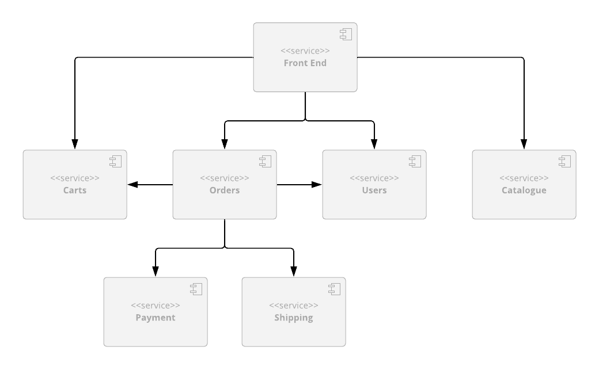

<div class="initial-content">
  <div id="main" role="main">

  <article class="page has-sidebar" itemscope itemtype="https://schema.org/CreativeWork">
    <meta itemprop="headline" content="Creating an E-commerce Site with Oracle Coherence CE and Micronaut">
    
    <meta itemprop="datePublished" content="2022-01-14T13:04:00+00:00">
    


    <header>
      <h1 id="page-title" class="page__title" itemprop="headline">Creating an E-commerce Site with Oracle Coherence CE and Micronaut
</h1>
      


    </header>

    <section class="page__content" itemprop="text">
      

        <p>Welcome!</p>

<p>In this tutorial, we’ll walk through creating a stateful, microservices-based application that uses <a href="https://coherence.community/">Oracle Coherence CE</a> as a scalable embedded data store and <a href="https://micronaut.io/">Micronaut Framework</a> as an application framework.</p>

<p>Ultimately, the application we’re building is an online store that sells socks, and is based on the <a href="https://microservices-demo.github.io">SockShop Microservices Demo</a> originally written and published under Apache 2.0 license by <a href="https://go.weave.works/socks">Weaveworks</a>.</p>

<p>If you’re curious, check out a <a href="http://socks.weave.works/">working demo</a> of the original application.</p>

<p><strong>Demo summary:</strong></p>

<p>This demo still uses the original front-end implementation provided by Weaveworks, but all back-end services have been re-implemented from scratch using Micronaut Framework and Oracle Coherence in order to showcase the many features of the <a href="https://github.com/micronaut-projects/micronaut-coherence">Coherence Micronaut</a> integration.</p>

<p>We also provide the implementations of the same application that uses Spring Boot or Helidon as the application framework, in case one of those is your framework of choice.</p>

<ul>
  <li><a href="https://github.com/oracle/coherence-spring-sockshop-sample">Coherence Spring Sock Shop</a></li>
  <li><a href="https://github.com/oracle/coherence-helidon-sockshop-sample">Coherence Helidon Sock Shop</a></li>
</ul>

<p><strong>Topics covered in this tutorial:</strong></p>

<ul>
  <li><strong>Local install</strong>
    <ul>
      <li>Installing the Coherence Operator</li>
      <li>Installing a back end</li>
      <li>(Optional) Installing the back end into the <code class="language-plaintext highlighter-rouge">sockshop</code> namespace</li>
      <li>Scaling the back end</li>
    </ul>
  </li>
  <li><strong>Complete application deployment</strong></li>
  <li><strong>Development (extending the application)</strong></li>
</ul>

<p><strong>For more information, see:</strong></p>

<ul>
  <li><a href="https://docs.oracle.com/iaas/Content/GSG/Tasks/signingup.htm">Signing Up for Oracle Cloud Infrastructure</a></li>
  <li><a href="https://docs.oracle.com/en-us/iaas/Content/API/Concepts/cloudshellintro.htm">Getting started with OCI Cloud Shell</a></li>
</ul>

<h2 id="prerequisites">Prerequisites</h2>

<p>To successfully complete this tutorial, you’ll need the following:</p>

<ul>
  <li>An Oracle Cloud Infrastructure (OCI) Free Tier account. <a href="https://signup.cloud.oracle.com/?language=en&amp;sourceType=:ow:de:te::::RC_WWMK211116P00260:DotBuildGetStarted&amp;intcmp=:ow:de:te::::RC_WWMK211116P00260:DotBuildGetStarted">Start for Free</a>.</li>
  <li>A MacOS, Linux, or Windows computer with <code class="language-plaintext highlighter-rouge">ssh</code> support installed.</li>
  <li><strong><a href="https://docs.oracle.com/en-us/iaas/Content/API/Concepts/cloudshellintro.htm">OCI Cloud Shell</a></strong> - It provides a host of other OCI interfaces and tools.</li>
  <li><strong>Kustomize</strong> - Make sure that you have a newer version of <code class="language-plaintext highlighter-rouge">kubectl</code> that supports it (at least 1.16 or above)</li>
</ul>

<h2 id="architecture">Architecture</h2>

<p>Before we get started, let’s take a quick look at how this is all put together. The application consists of six back-end services rewritten from the ground up on top of Micronaut, implementing the API that the legacy <code class="language-plaintext highlighter-rouge">front-end</code> service expects.</p>

<picture class="">
                <source srcset="assets/coherence-micronaut-diagram.png 1x" />
                
            </picture>

<p><strong>Reference -</strong> You can find additional details for each service by following these links:</p>

<table>
  <thead>
    <tr>
      <th style="text-align: center">Link</th>
      <th>REST API</th>
    </tr>
  </thead>
  <tbody>
    <tr>
      <td style="text-align: center"><strong><a href="https://github.com/oracle/coherence-micronaut-sockshop-sample/blob/master/catalog">Product Catalog</a></strong></td>
      <td>allows you to search product catalog and retrieve individual product details</td>
    </tr>
    <tr>
      <td style="text-align: center"><strong><a href="https://github.com/oracle/coherence-micronaut-sockshop-sample/blob/master/carts">Shopping Cart</a></strong></td>
      <td>allows you to manage customers’ shopping carts</td>
    </tr>
    <tr>
      <td style="text-align: center"><strong><a href="https://github.com/oracle/coherence-micronaut-sockshop-sample/blob/master/orders">Orders</a></strong></td>
      <td>allows customers to place orders</td>
    </tr>
    <tr>
      <td style="text-align: center"><strong><a href="https://github.com/oracle/coherence-micronaut-sockshop-sample/blob/master/payment">Payment</a></strong></td>
      <td>allows you to process payments</td>
    </tr>
    <tr>
      <td style="text-align: center"><strong><a href="https://github.com/oracle/coherence-micronaut-sockshop-sample/blob/master/shipping">Shipping</a></strong></td>
      <td>allows you to ship orders and track shipments</td>
    </tr>
    <tr>
      <td style="text-align: center"><strong><a href="https://github.com/oracle/coherence-micronaut-sockshop-sample/blob/master/users">Users</a></strong></td>
      <td>allows you to manage customer information and provides registration and authentication functionality for the customers</td>
    </tr>
  </tbody>
</table>

<h2 id="project-structure">Project Structure</h2>

<p>The main <a href="https://github.com/oracle/coherence-micronaut-sockshop-sample/blob/master">Sock Shop</a> repository also contains Kubernetes deployment files for the whole application as well as a top-level POM file which allows you to easily build the whole project and import it into your favorite IDE.</p>

<h2 id="getting-started">Getting started</h2>

<p>Kubernetes scripts depend on Kustomize, so make sure that you have a newer version of <code class="language-plaintext highlighter-rouge">kubectl</code> that supports it (at least 1.16 or above).</p>

<p>The easiest way to try the demo is to use the Kubernetes deployment scripts from this <a href="https://github.com/oracle/coherence-micronaut-sockshop-sample/blob/master">repo</a>.</p>

<p>If you do, you can simply run the following commands from the <code class="language-plaintext highlighter-rouge">coherence-micronaut-sockshop-sample</code> directory.</p>

<h3 id="install-the-coherence-operator">Install the Coherence Operator</h3>

<p>Install the Coherence Operator using the instructions in the <a href="https://oracle.github.io/coherence-operator/docs/latest/#/about/03_quickstart">Coherence Operator Quick Start</a> documentation.</p>

<h3 id="installing-a-back-end">Installing a back end</h3>

<ol>
  <li>
    <p>Create a namespace in Kubernetes called <code class="language-plaintext highlighter-rouge">sockshop</code>:</p>

    <div class="language-bash highlighter-rouge"><div class="highlight"><pre class="highlight"><code>   kubectl create namespace sockshop
</code></pre></div>    </div>
  </li>
  <li>
    <p>Install the back end into the <code class="language-plaintext highlighter-rouge">sockshop</code> namespace:</p>

    <div class="language-bash highlighter-rouge"><div class="highlight"><pre class="highlight"><code>   kubectl <span class="nt">--namespace</span> sockshop apply <span class="nt">-k</span> k8s/coherence 
</code></pre></div>    </div>

    <p>The <code class="language-plaintext highlighter-rouge">-k</code> parameter above will use <code class="language-plaintext highlighter-rouge">kubectl</code> with <code class="language-plaintext highlighter-rouge">kustomize</code> to merge all the files under the specified directory and create all Kubernetes resources defined by them, such as deployments and services for each microservice.</p>
  </li>
</ol>

<h3 id="optional-install-the-original-weavesocks-front-end">(Optional) Install the original WeaveSocks front end</h3>

<blockquote class="warn">
  <p><strong>Warning:</strong> There are a few important things to note about the original implementation of the the WeaveSocks front end, so keep these in mind as you try out the demo. It has a few bugs, including some security issues, and it hasn’t been actively maintained for a few years. However, if you want to deploy it to see how it interacts with our back-end services, you can follow the steps in the sections below.</p>
</blockquote>

<ol>
  <li>
    <p>Install the <code class="language-plaintext highlighter-rouge">front-end</code> service by running the following command:</p>

    <div class="language-bash highlighter-rouge"><div class="highlight"><pre class="highlight"><code>   kubectl apply <span class="nt">-f</span> k8s/optional/original-front-end.yaml <span class="nt">--namespace</span> sockshop
</code></pre></div>    </div>
  </li>
  <li>
    <p>Port-forward to the <code class="language-plaintext highlighter-rouge">front-end</code> UI using the following processes:</p>

    <p><strong>Mac/Linux:</strong></p>

    <div class="language-bash highlighter-rouge"><div class="highlight"><pre class="highlight"><code>   kubectl port-forward <span class="nt">--namespace</span> sockshop service/front-end &lt;localPort&gt;:80
</code></pre></div>    </div>

    <p><strong>Windows:</strong></p>

    <div class="language-bash highlighter-rouge"><div class="highlight"><pre class="highlight"><code>   kubectl port-forward <span class="nt">--namespace</span> sockshop service/front-end &lt;localPort&gt;:80
</code></pre></div>    </div>

    <blockquote class="notice">
      <p><strong>Note:</strong> If you have installed into a namespace then add the <code class="language-plaintext highlighter-rouge">--namespace</code> option to all <code class="language-plaintext highlighter-rouge">kubectl</code> commands in these instructions.</p>
    </blockquote>
  </li>
</ol>

<p>At this point, you should be able to access the home page for the application by pointing your browser to: <code class="language-plaintext highlighter-rouge">http://localhost:&lt;localPort&gt;/</code>.</p>

<p>You should then be able to browse the product catalog, add products to shopping cart, register as a new user, place an order, and browse order history, among other actions.</p>

<p>Once you are finished, you can clean up the environment by executing the following:</p>

<div class="language-bash highlighter-rouge"><div class="highlight"><pre class="highlight"><code>kubectl delete <span class="nt">-f</span> k8s/optional/original-front-end.yaml <span class="nt">--namespace</span> sockshop
kubectl delete <span class="nt">-k</span> k8s/coherence <span class="nt">--namespace</span> sockshop
</code></pre></div></div>

<h3 id="scale-the-back-end">Scale the back end</h3>

<p>If you wish to scale the back end, use one of the following commands:</p>

<ul>
  <li>
    <p><strong>Scale only the orders microservice</strong></p>

    <div class="language-bash highlighter-rouge"><div class="highlight"><pre class="highlight"><code>  kubectl <span class="nt">--namespace</span> sockshop scale coherence orders <span class="nt">--replicas</span><span class="o">=</span>3
</code></pre></div>    </div>
  </li>
  <li>
    <p><strong>Scale <em>all</em> the microservices</strong></p>

    <div class="language-bash highlighter-rouge"><div class="highlight"><pre class="highlight"><code>  <span class="nv">$ </span><span class="k">for </span>name <span class="k">in </span>carts catalog orders payment shipping <span class="nb">users
      </span><span class="k">do </span>kubectl <span class="nt">--namespace</span> sockshop scale coherence <span class="nv">$name</span> <span class="nt">--replicas</span><span class="o">=</span>3
  <span class="k">done</span>
</code></pre></div>    </div>
  </li>
</ul>

<h2 id="complete-application-deployment">Complete application deployment</h2>

<p>The steps in the <a href="#getting-started">Getting Started</a> section showed you how to run the application locally. However, that may not be enough if you want to experiment with scaling individual services such as tracing data in <em>Jaeger</em>, monitoring services via <em>Prometheus</em> and <em>Grafana</em>, or making API calls directly using <em>Swagger UI</em>.</p>

<p>To do all of the above, you’ll need to deploy the services into a managed Kubernetes cluster in the cloud. You can accomplish this by following the same set of steps described above (except for port forwarding, which isn’t necessary) and performing a few additional steps described more fully in the <a href="https://github.com/oracle/coherence-micronaut-sockshop-sample/blob/master/doc/complete-application-deployment.md">Complete Application Deployment</a> document.</p>

<h2 id="development">Development</h2>

<p>If you want to modify the demo, follow these steps:</p>

<ol>
  <li>check out the code for the project</li>
  <li>build it locally</li>
  <li><strong>(optionally)</strong> push new container images to the repository of your choice</li>
</ol>

<p><strong>Reference -</strong> <a href="https://github.com/oracle/coherence-micronaut-sockshop-sample/blob/master/doc/development.md">Development section</a></p>

<h2 id="next-steps">Next steps</h2>

<p>To explore more information about development with Oracle products:</p>

<ul>
  <li><a href="https://developer.oracle.com/">Oracle Developers Portal</a></li>
  <li><a href="https://www.oracle.com/cloud/">Oracle Cloud Infrastructure</a></li>
</ul>

<h2 id="license">License</h2>

<p>The Universal Permissive License (UPL), Version 1.0</p>

<!--- links -->


          <div class="sidebar sticky">
    <!-- <p><strong>Tags:</strong> <span class="tags">

            
            <a class="animated-link tag" href="/topics/analytics">analytics</a>
            <a class="animated-link tag" href="/topics/oci">oci</a>
            </span>
    </p> -->
  


<div itemscope itemtype="https://schema.org/Person">

  

  <div class="author__content">
    
      <h3 class="author__name" itemprop="name">Aleks Seovic</h3>
    
    
  </div>

  <div class="author__urls-wrapper">
    <ul class="author__urls social-icons">
      

      

      

      

      

      

      

      

      

      

      

      

      
        <li>
          <a href="https://github.com/https://github.com/aseovic" itemprop="sameAs" rel="nofollow noopener noreferrer">
            <i class="fab fa-fw fa-github" aria-hidden="true"></i><span class="label">GitHub</span>
          </a>
        </li>
      

      

      

      

      

      

      

      

      

      

      

      

      

      

      
    </ul>
  </div>
</div>

  
  
  

  </div>


      </section>

      <footer class="page__meta">
        
        


        

  <p class="page__date"><strong><i class="fas fa-fw fa-calendar-alt" aria-hidden="true"></i> Updated:</strong> <time datetime="2022-01-14T13:04:00+00:00">January 14, 2022</time></p>


      </footer>
    </div>

  </article>
</div>

</div>

